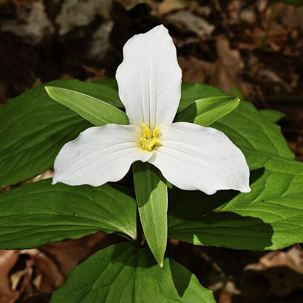
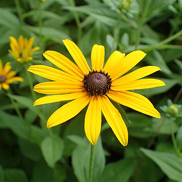
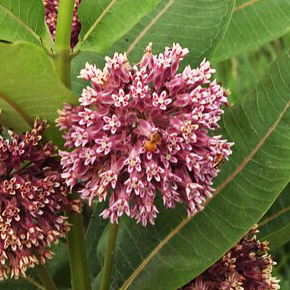
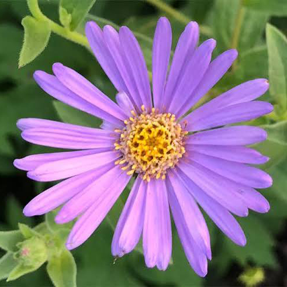
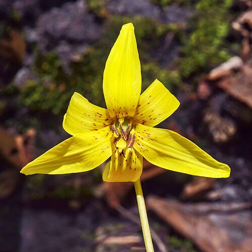
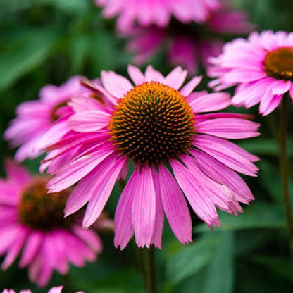
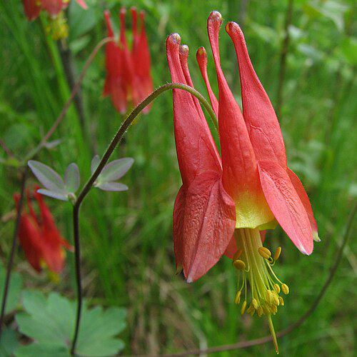
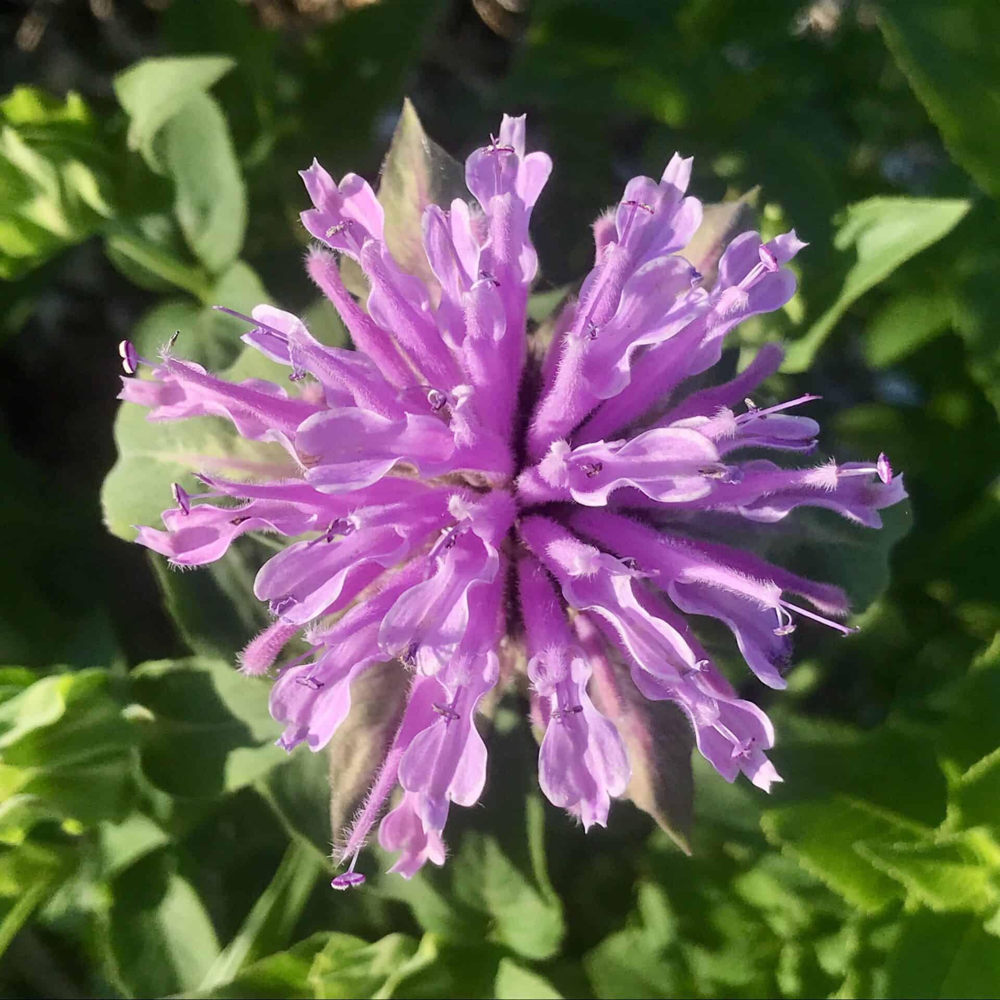

Meet The Wildflowers That Brighten Ontario
Learn about the wildflowers that make Ontario’s landscapes unique.

White Trillium
Ontario's provincial flower, known for its three white petals and early spring bloom.
learn more
Black-eyed Susan
A bright yellow flower with a dark brown center that blooms in summer.
learn more
Common Milkweed
Produces clusters of pink flowers and provides food for monarch butterflies.
learn more
New England Aster
A purple, daisy flower with a yellow centre that blooms in late summer and fall.
learn more
Yellow Trout Lily
A delicate woodland flower with yellow petals that appears in early spring.
learn more
Purple Coneflower
A pink-purple flower with drooping petals and a raised, spiky centre.
learn more
Wild Columbine
A red and yellow wildflower with unique, dangling, bell-shaped blooms.
learn more
Wild Bergamot
A purple, shaggy-looking flower that attracts bees and butterflies.
learn more